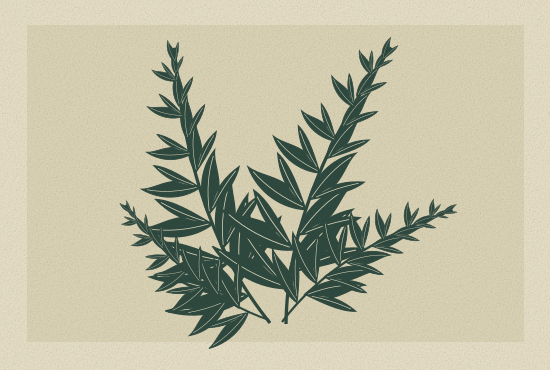

Папоротник
Линогравюра
Линогравюра, шелкография, монотипия. Смотрим, как рисунок с печатной формы переходит на бумагу.
Три работы, три техники
Три способа перенести краску на бумагу. Всё зависит от того, где она остаётся на форме.
Резцом убирают участки, которые должны остаться белыми. Валик наносит краску на выступы линолеума, а бумага забирает её под давлением. Для второго цвета нужна отдельная форма или новый этап резьбы.
На сетку наносят трафарет. Ракель проталкивает краску через открытые ячейки, а закрытые оставляют бумагу чистой. Следующий цвет печатают после высыхания предыдущего.
Изображение рисуют краской на гладкой пластине и переносят на лист. Большая часть краски уходит с первым оттиском, поэтому точной копии не получится.
Один лист может показать весь ход работы: линию резца, стык двух цветов, след от края формы. Здесь мы рассматриваем печатную графику через эти детали — от пробного до готового оттиска.